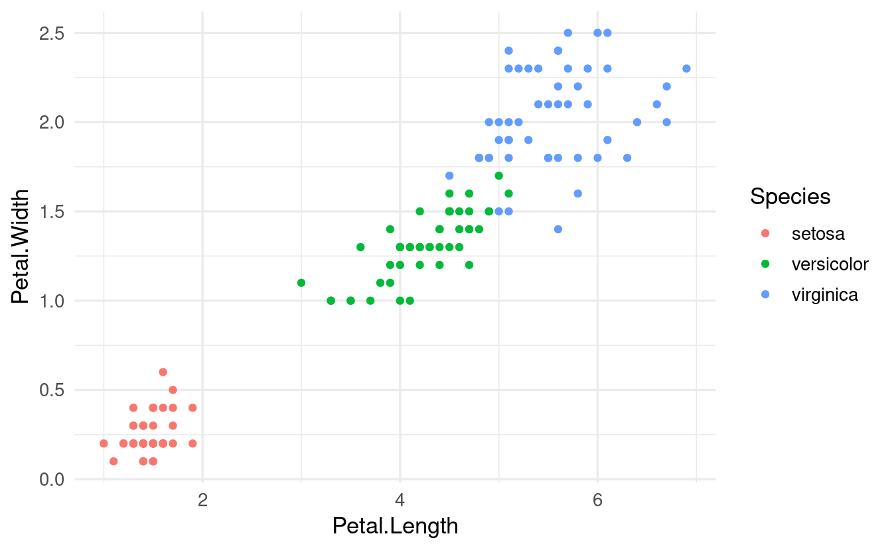
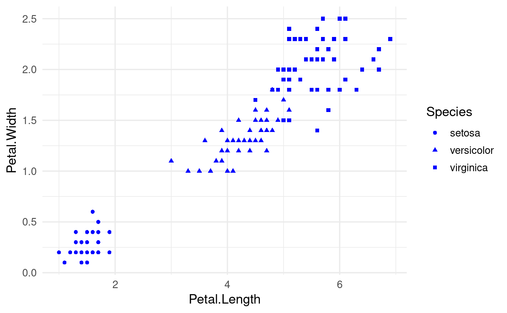
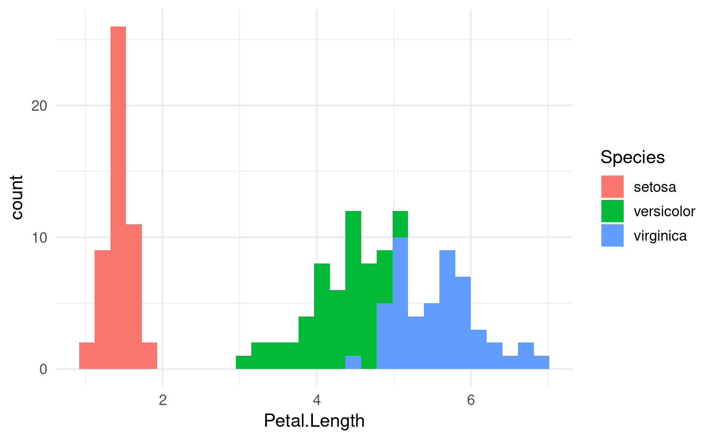
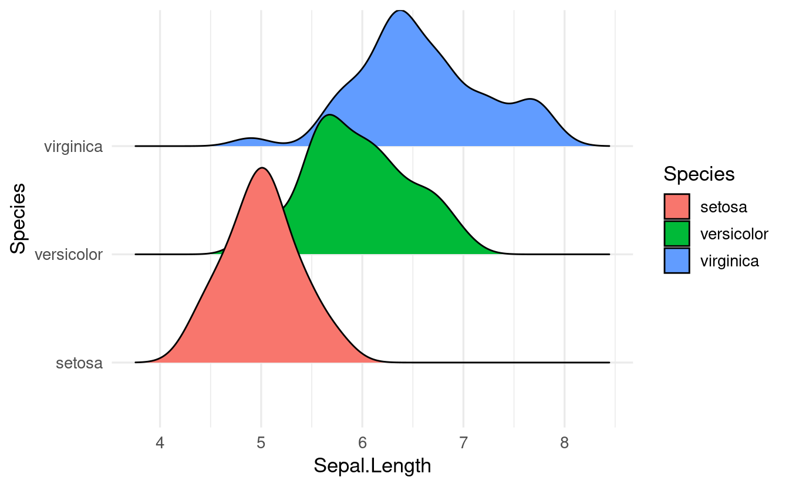

R4DS Chapter 10: ggplot layers, part 2
More aesthetic mappings and geoms
Introduction
Session goals
- Recap last week’s material on aesthetic mappings and geom layers
- Learn about the difference between local and global aesthetic mappings
- See several additional aesthetic mappings (like
shapeandfill) and geoms (likegeom_boxplotandgeom_violin) - See an example of a geom from an “extension” package to make a ridgeway plot
Setting up
The ggplot2 package is one of the core tidyverse packages, so it’s generally most convenient to load it along with the rest of the tidyverse:
# If you don't have the tidyverse installed, first do so as follows:
# install.packages("tidyverse")library(tidyverse)
#> ── Attaching core tidyverse packages ──────────────────────── tidyverse 2.0.0 ──
#> ✔ dplyr 1.1.0 ✔ readr 2.1.4
#> ✔ forcats 1.0.0 ✔ stringr 1.5.0
#> ✔ ggplot2 3.4.1 ✔ tibble 3.1.8
#> ✔ lubridate 1.9.2 ✔ tidyr 1.3.0
#> ✔ purrr 1.0.1
#> ── Conflicts ────────────────────────────────────────── tidyverse_conflicts() ──
#> ✖ dplyr::filter() masks stats::filter()
#> ✖ dplyr::lag() masks stats::lag()
#> ℹ Use the conflicted package to force all conflicts to become errorsWe’ll talk about formatting plots to your heart’s delight in Chapter 12, but one trick for now is to set a ggplot2 plotting “theme” that differs from the default for the rest of your R session:
# - Overview of themes: https://ggplot2.tidyverse.org/reference/ggtheme.html
# - The default base_size is 11, setting to 13 will make any text larger
theme_set(theme_minimal(base_size = 13))10.2 – Aesthetic mappings
Recap of last week
In last week’s session, we worked with the built-in iris dataframe, which has flower measurements for 3 species of iris:
head(iris)
#> Sepal.Length Sepal.Width Petal.Length Petal.Width Species
#> 1 5.1 3.5 1.4 0.2 setosa
#> 2 4.9 3.0 1.4 0.2 setosa
#> 3 4.7 3.2 1.3 0.2 setosa
#> 4 4.6 3.1 1.5 0.2 setosa
#> 5 5.0 3.6 1.4 0.2 setosa
#> 6 5.4 3.9 1.7 0.4 setosaWe learned that we create ggplots by “mapping” variables (dataframe columns) to so-called “aesthetics” such as the x-axis, the y-axis, and color:
-
If we map the
irisdataframe variablePetal.Lengthto thex-axis aesthetic, then the x-axis of our plot will represent the values from the columnPetal.Lengthin the dataframe. -
If we map the variable
Speciesto thecoloraesthetic, then observations are colored according to the values in theSpeciescolumn, i.e. according to which species of iris they belong to.
# Recall: wrapping code inside "aes()" conveys that we are mapping aesthetics
ggplot(data = iris,
mapping = aes(x = Petal.Length, y = Petal.Width, color = Species)) +
geom_point()

Other aesthetics
Several other aesthetics exist, such as fill (like color, but then to fill in areas), point shape and size, line linewidth and linetype, and alpha (transparency).
Let’s try shape instead of color to distinguish the iris species:
ggplot(data = iris,
mapping = aes(x = Petal.Length, y = Petal.Width, shape = Species)) +
geom_point()

Or size:
ggplot(data = iris,
mapping = aes(x = Petal.Length, y = Petal.Width, size = Species)) +
geom_point()
#> Warning: Using size for a discrete variable is not advised.Why would ggplot give us a warning here? When is size a useful aesthetic?
Visual properties
While color and the other “visual properties” mentioned above can be used as an aesthetic, they can also be set manually for all the data at once:
ggplot(data = iris,
mapping = aes(x = Petal.Length, y = Petal.Width, shape = Species)) +
geom_point(color = "blue")

The key difference in the syntax of the code above is not that color is specified inside geom_point() rather than ggplot(): as we’ll see below, aesthetic mappings can be set in either location. Instead, it is that we are not specifying color inside an aes() function call.
10.3 – Geometric objects
Last week, we learned that ggplot geometric objects (i.e., “geoms") are essentially plot types, which are added to a plot with geom_...() functions.
And that different geoms can be layered on top of each other, such as when you want to show the raw data points (geom_point()) along with summaries of the data such as a trend line (geom_smooth()).
Local vs global aesthetics
One thing that’s important to realize once you start using multiple geoms in a single plot is the distinction between “global” versus “local” aesthetics:
-
Global aesthetics apply to all geoms in the plot, and are added in the initial
ggplot()call (or in a stand-aloneaes()layer). -
Local aesthetics apply only to the geom to which they are added.
For instance, if we globally map Species to color, this will apply to the geom_point() and geom_smooth() calls below it:
ggplot(data = iris,
mapping = aes(x = Petal.Length, y = Petal.Width, color = Species)) +
geom_point() +
geom_smooth()
#> `geom_smooth()` using method = 'loess' and formula = 'y ~ x'
Note also that in case of geom_smooth(), which summarizes the data using a statistical function, this summarizing is done entirely separately for each species!
Compare this with the plot that is created when we define the color mapping locally, and only for geom_point():
ggplot(data = iris,
mapping = aes(x = Petal.Length, y = Petal.Width)) +
geom_point(mapping = aes(color = Species)) +
geom_smooth()
#> `geom_smooth()` using method = 'loess' and formula = 'y ~ x'
Now, we got a single line (and a single statistical fit) that ignores the Species identity of each flower.
Many different geoms, same syntax
ggplot has dozens of different geoms – for an overview, see this cheatsheet that Jessica linked to last week or the ggplot reference on geoms.
Let’s see a couple more commonly used geoms. Last week we talked a bit about how a scatterplot does not always make it easy to compare the distributions of a variable among groups.
Useful plot types for showing and comparing distributions are histograms, density plots, box plots, and violin plots. Notice below that we use nearly identical code to make these different plots (in this case, to show the distribution of Petal.Length among iris species):
ggplot(data = iris,
mapping = aes(x = Petal.Length, fill = Species)) +
geom_histogram()
#> `stat_bin()` using `bins = 30`. Pick better value with `binwidth`.
ggplot(data = iris,
mapping = aes(x = Petal.Length, fill = Species)) +
geom_density()

In the plots above, we only needed one axis (x), since the other axis consisted of counts/density computed by the plot itself. For box and violin plots, we do specify an x-axis when we want to show multiple groups:
ggplot(data = iris,
mapping = aes(y = Petal.Length, x = Species, fill = Species)) +
geom_boxplot()
ggplot(data = iris,
mapping = aes(y = Petal.Length, x = Species, fill = Species)) +
geom_violin()

Geoms from ggplot “extension” packages
There are also many ggplot extension packages (see this link for an overview). Some of these offer additional geoms, like the recently popular “ridgeline” plots from the ggridges package.
First, we’ll have to install the package:
install.packages("ggridges")Then we can load it and use the ridgeplot geom geom_density_ridges() just like any other geom:
library(ggridges)
ggplot(data = iris,
mapping = aes(x = Sepal.Length, y = Species, fill = Species)) +
geom_density_ridges(alpha = 0.5)
#> Picking joint bandwidth of 0.181
(Above, we set alpha to 0.5 to get medium transparency of the fill colors.)
Breakout Rooms
The following exercises use another built-in R dataframe, mpg, which has some statistics on cars.
head(mpg)
#> # A tibble: 6 × 11
#> manufacturer model displ year cyl trans drv cty hwy fl class
#> <chr> <chr> <dbl> <int> <int> <chr> <chr> <int> <int> <chr> <chr>
#> 1 audi a4 1.8 1999 4 auto(l5) f 18 29 p compa…
#> 2 audi a4 1.8 1999 4 manual(m5) f 21 29 p compa…
#> 3 audi a4 2 2008 4 manual(m6) f 20 31 p compa…
#> 4 audi a4 2 2008 4 auto(av) f 21 30 p compa…
#> 5 audi a4 2.8 1999 6 auto(l5) f 16 26 p compa…
#> 6 audi a4 2.8 1999 6 manual(m5) f 18 26 p compa…You will use these columns:
displis the engine size (or “displacement”)hwyis gas mileage (miles per gallon) when driving on a highwaydrvis the type of “drive train”, wheref= front-wheel drive,r= rear wheel drive,4= 4wd.
Exercise 1
Very similar to our iris plot above, make a ridgeline plot of mileage (hwy) for cars with different drive trains (drive).
And like in our iris plot, also map the fill aesthetic to the categorical variable (drive).
Solution (click here)
ggplot(data = mpg,
mapping = aes(x = hwy, y = drv, fill = drv)) +
geom_density_ridges()
#> Picking joint bandwidth of 1.28
Exercise 2
Let’s try to make the plot you made in Exercise 1 a bit nicer.
-
One issue is that the density shapes overlap. We can elegantly solve this by making them somewhat transparent, which we can do by setting
alpha, e.g. to 0.5 (you would do this in the same way you would e.g. set (not map!) the color). -
What do you think would happen if you also map the
coloraesthetic todrive? Check if you’re right by making the plot. -
As soon as we use the
colorand/orfillaesthetics, a legend will pop up. Do we need a legend in this case? Make the legend disappear by addingshow.legend = FALSEinsidegeom_density_ridges().
Hints (click here)
- To set alpha to 0.5, use
geom_density_ridges(alpha = 0.5).
Solution (click here)
- Making the shapes partially transparent:
ggplot(data = mpg,
mapping = aes(x = hwy, y = drv, fill = drv)) +
geom_density_ridges(alpha = 0.5)
#> Picking joint bandwidth of 1.28
- When we map the
coloraesthetic, the line (as opposed to the fill) around the density shapes will get different colors:
ggplot(data = mpg,
mapping = aes(x = hwy, y = drv, fill = drv, color = drv)) +
geom_density_ridges(alpha = 0.5)
#> Picking joint bandwidth of 1.28
- We don’t need a legend for
drvhere because we are already showing this information along the y-axis (for that matter, we don’t need different colors, but it makes the plot prettier). We can turn off the legend as follows:
ggplot(data = mpg,
mapping = aes(x = hwy, y = drv, fill = drv, color = drv)) +
geom_density_ridges(alpha = 0.5, show.legend = FALSE)
#> Picking joint bandwidth of 1.28Exercise 3
- Why does the following code not result in a plot with blue points?
ggplot(data = mpg) +
geom_point(mapping = aes(x = displ, y = hwy, color = "blue"))-
Can you correct the error to create a plot with blue points?
-
Going back to the initial erroneous code: does ggplot’s behavior make sense to you, or would you have expected an error, for example?
Solution (click here)
First, let’s see the plot that the code produces:
ggplot(data = mpg) +
geom_point(mapping = aes(x = displ, y = hwy, color = "blue"))

-
The error in the code is that
color = "blue"was placed inside theaes()function. As such,colorwas interpreted as an aesthetic mapping, not as a visual property. -
Here is the correct code and plot:
ggplot(data = mpg) +
geom_point(mapping = aes(x = displ, y = hwy),
color = "blue")

-
You might have been surprised that the inital code did not result in an error, since we normally map dataframe columns (like
displandhwyin this plot) to aesthetics, and"blue"is not a name of one of the columns inmpg.But, because
"blue"was quoted, it was interpreted as a stand-alone vector instead. And in turn, because of R’s automatic vector recycling,"blue"was repeated as many times as needed, under the hood, to map it to all observations in the plot.(This leads to the realization that you don’t have to map aesthetics to dataframe columns, you can also provide stand-alone vectors: you’ll see more of that in the next exercise.)
Bonus Exercise
What happens if you map an aesthetic to something other than a variable name, like aes(color = displ < 5)? Note, you’ll also need to specify x and y.
Do you understand why this code produces the resulting plot?
Hints (click here)
-
You can for example plot the
mpgdata withdisplalong the x-axis andhwyalong the y-axis. -
To understand what is happening: what would
displ < 5by itself return? (To directly test this, runmpg$displ < 5.)
Solution (click here)
In the resulting plot, the color aesthetic will be mapped to whether or not the value of displ is below 5:
ggplot(data = mpg) +
geom_point(mapping = aes(x = displ, y = hwy, color = displ < 5))

By itself, displ < 5 within the ggplot functions will return in a logical vector: a vector with TRUE and FALSE for each corresponding displ value that tells us whether this value is smaller than 5 (=> TRUE) or not (=> FALSE). To see this in a stand-alone manner, we can run:
mpg$displ < 5
#> [1] TRUE TRUE TRUE TRUE TRUE TRUE TRUE TRUE TRUE TRUE TRUE TRUE
#> [13] TRUE TRUE TRUE TRUE TRUE TRUE FALSE FALSE FALSE FALSE FALSE FALSE
#> [25] FALSE FALSE FALSE FALSE FALSE FALSE FALSE FALSE TRUE TRUE TRUE TRUE
#> [37] TRUE TRUE TRUE TRUE TRUE TRUE TRUE TRUE TRUE TRUE TRUE TRUE
#> [49] TRUE TRUE TRUE TRUE TRUE TRUE TRUE FALSE FALSE TRUE TRUE TRUE
#> [61] TRUE FALSE FALSE FALSE TRUE TRUE TRUE TRUE TRUE TRUE FALSE FALSE
#> [73] FALSE FALSE TRUE FALSE FALSE TRUE TRUE TRUE TRUE TRUE FALSE TRUE
#> [85] TRUE TRUE TRUE TRUE FALSE FALSE TRUE TRUE TRUE TRUE TRUE TRUE
#> [97] TRUE TRUE FALSE TRUE TRUE TRUE TRUE TRUE TRUE TRUE TRUE TRUE
#> [109] TRUE TRUE TRUE TRUE TRUE TRUE TRUE TRUE TRUE TRUE TRUE TRUE
#> [121] TRUE TRUE TRUE TRUE TRUE TRUE TRUE TRUE FALSE FALSE TRUE TRUE
#> [133] TRUE TRUE FALSE FALSE FALSE TRUE TRUE TRUE FALSE TRUE TRUE TRUE
#> [145] TRUE TRUE TRUE TRUE TRUE TRUE TRUE TRUE TRUE FALSE TRUE TRUE
#> [157] TRUE TRUE FALSE TRUE TRUE TRUE TRUE TRUE TRUE TRUE TRUE TRUE
#> [169] TRUE TRUE TRUE TRUE TRUE TRUE TRUE TRUE TRUE TRUE TRUE TRUE
#> [181] TRUE TRUE TRUE TRUE TRUE TRUE TRUE TRUE TRUE TRUE TRUE TRUE
#> [193] TRUE TRUE TRUE TRUE TRUE TRUE TRUE FALSE TRUE TRUE TRUE TRUE
#> [205] TRUE TRUE TRUE TRUE TRUE TRUE TRUE TRUE TRUE TRUE TRUE TRUE
#> [217] TRUE TRUE TRUE TRUE TRUE TRUE TRUE TRUE TRUE TRUE TRUE TRUE
#> [229] TRUE TRUE TRUE TRUE TRUE TRUENext, ggplot is able to map this vector to the color aesthetic in the plot, just like it maps dataframe columns to an aesthetic (after all, dataframe columns are just vectors, too).